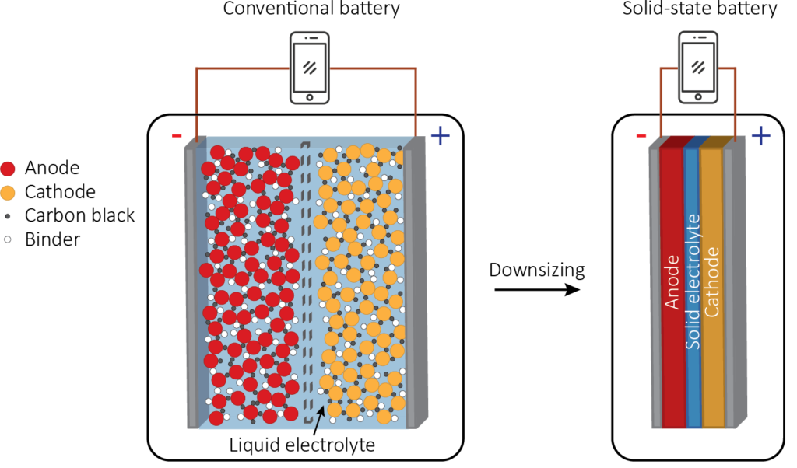
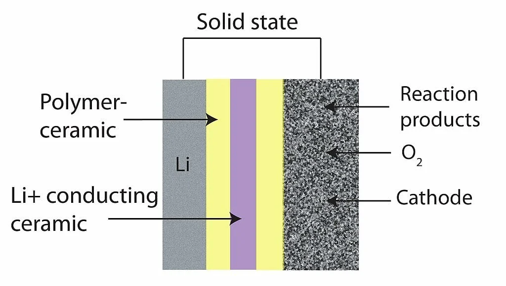
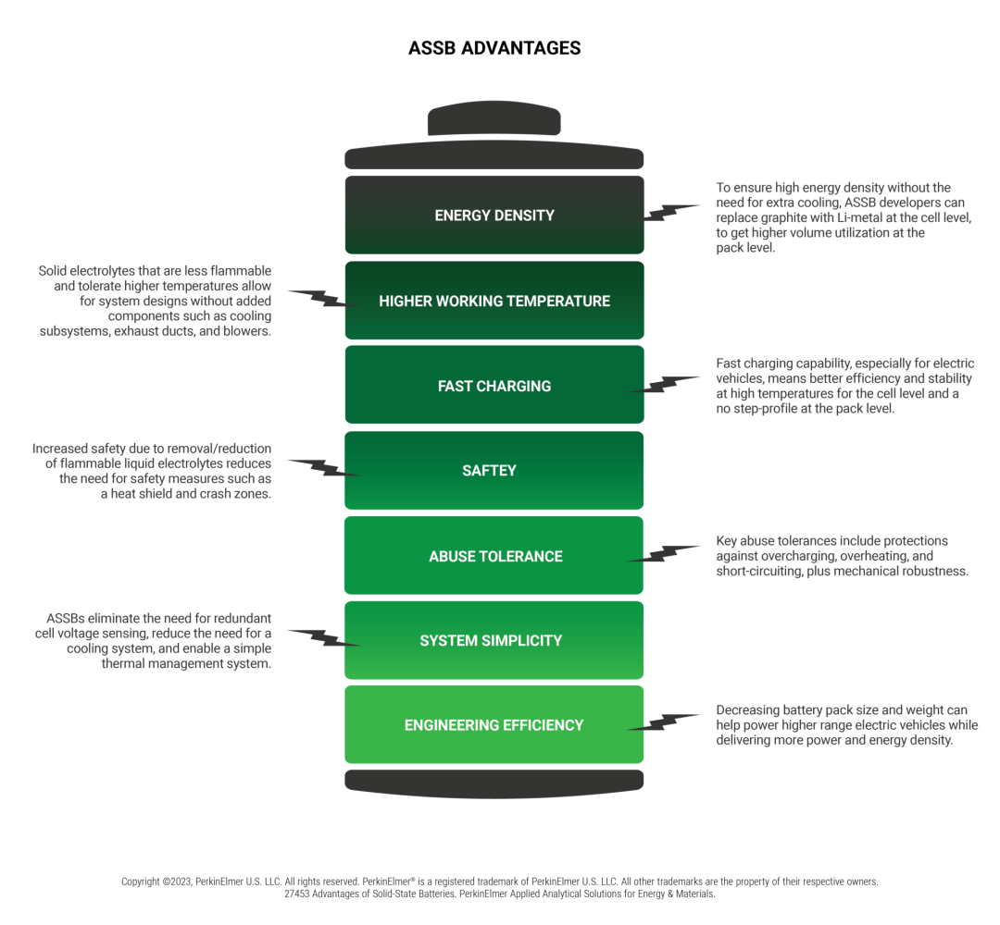
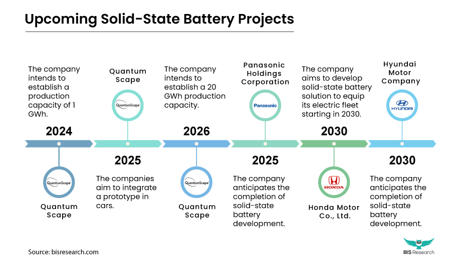
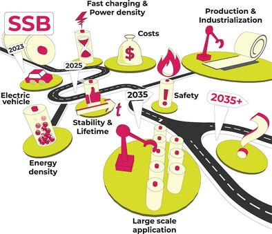
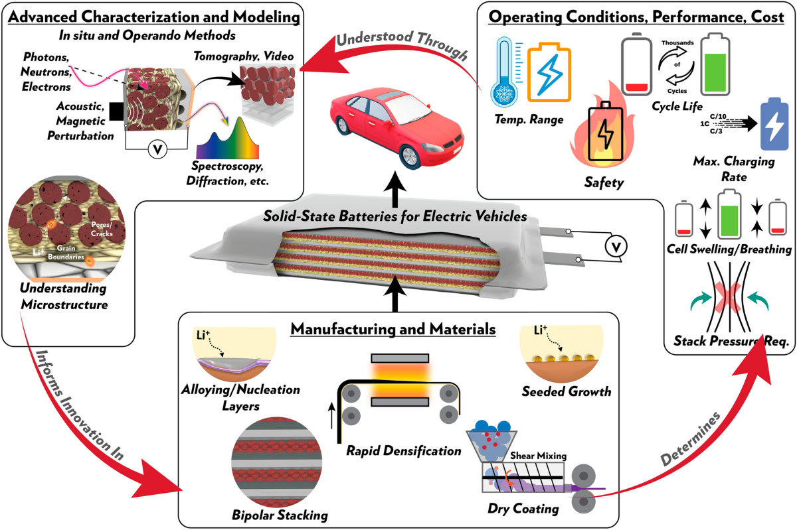

The race to develop solid-state batteries is rapidly accelerating, with major automakers and technology companies making significant strides toward commercialization. These next-generation energy storage devices, which replace liquid electrolytes with solid materials, promise greater safety, higher energy density, and faster charging capabilities than conventional lithium-ion batteries.
As of May 2025, several industry leaders have announced production timelines within the next 12-24 months, suggesting that solid-state batteries are on the cusp of commercial viability. However, challenges in scaling production and reducing costs remain substantial hurdles before widespread adoption becomes reality.
The Technology Behind Solid-State Batteries
Fundamental Differences from Conventional Batteries
Solid-state batteries represent a fundamental shift in battery design by replacing liquid or gel electrolytes with solid electrolytes that conduct lithium ions between electrodes. Unlike traditional lithium-ion batteries, solid-state cells don't require a separator between the cathode and anode, as the solid electrolyte itself serves this function. This architectural difference allows for the use of new anode materials like pure lithium metal, which significantly increases energy capacity compared to the graphite anodes used in conventional cells.

The solid electrolytes employed in these batteries typically consist of ceramic materials, sulfides, or polymers that enable ion movement through their crystalline structure. This solid construction eliminates the flammable liquid components that pose safety risks in traditional batteries and opens possibilities for more compact, energy-dense designs. The replacement of liquid electrolytes also addresses fundamental limitations that have constrained battery evolution for decades, potentially unlocking performance that far exceeds what's currently possible.

Performance Advantages
Solid-state batteries offer several compelling advantages over their liquid-electrolyte counterparts. Perhaps most significantly, they deliver substantially improved safety characteristics. The absence of flammable liquid electrolytes dramatically reduces the risk of thermal runaway-the primary cause of battery fires-with studies showing heat generation during potential failures at just 20-30% of conventional batteries. This enhanced safety profile could eliminate the need for complex cooling and protection systems in applications like electric vehicles.
From a performance perspective, solid-state designs demonstrate impressive capabilities. They feature remarkably low internal resistance-two to three times lower than standard lithium batteries-which reduces heat generation during operation and enables faster charging. Laboratory tests have shown that when discharged rapidly, solid-state batteries experience temperature increases of only about 23°C, approximately one-third of what standard lithium-iron-phosphate (LFP) batteries generate under similar conditions. This thermal stability contributes to significantly improved lifespan and durability.

The technology also expands operational parameters beyond what's possible with liquid electrolytes. Solid-state batteries can function at higher temperatures (above 60°C) and support higher-voltage cathode chemistries that exceed 5V-capabilities that conventional batteries cannot match. For electric vehicle applications, these properties translate to potentially longer ranges, faster charging, and greater reliability across various environmental conditions.
Industry Momentum and Manufacturing Progress
Automotive Leaders Accelerating Development
The automotive sector has emerged as the primary driver of solid-state battery advancement, with virtually every major manufacturer investing substantially in the technology. As of 2025, Toyota Motor Corporation continues to lead in patent holdings and developmental progress after extending its partnership with Panasonic specifically for solid-state technology.
Honda recently unveiled a demonstration production line for independently developed solid-state batteries at its R&D facility in Sakura, Japan, with operations expected to begin in early 2025. Mercedes-Benz AG has progressed to road testing vehicles equipped with solid-state batteries, demonstrating confidence in the technology's readiness for real-world evaluation.

Other major automotive players including Volkswagen , Nissan Motor Corporation , Ford Motor Company , and BMW Group have all established significant development programs. This industry-wide commitment reflects a consensus that solid-state technology represents the next evolutionary step for electric vehicle power systems. The concentration of resources from these global manufacturers has accelerated progress substantially compared to the more gradual development cycles typical of battery technology.
Production Timelines and Scaling Challenges
Several manufacturers have announced concrete production timelines, signaling a transition from research to commercialization. Honda 's demonstration production line is scheduled to enter operation in early 2025, replicating the processes required for mass manufacturing. QuantumScape , a leading solid-state battery developer, has already produced initial prototypes in autumn 2024 and plans to deliver its first commercial product, designated "QSE-5," in 2025. These near-term production goals indicate that early commercial applications could emerge within the next 12 months.
However, scaling from demonstration to mass production presents substantial challenges. Manufacturers must develop new production methods specifically optimized for solid-state cells, as existing lithium-ion manufacturing infrastructure isn't directly transferable to this technology. Honda, for instance, has focused its efforts on two critical areas: material specifications and production methods, with the goal of achieving large-scale manufacturing in the second half of this decade. This timeline aligns with industry consensus that widespread adoption will occur gradually through the latter half of the 2020s.
Market Outlook and Commercial Viability
The commercial potential for solid-state battery technology appears substantial. Market analysis indicates that the global market for solid-state batteries in electric vehicles alone was valued at $165.88 million in 2023, with projected growth of 44% annually through the end of the decade. This trajectory suggests explosive expansion as the technology matures and production capacity increases.

The Path to Widespread Adoption
Transitional Technologies and Hybrid Approaches
The transition to solid-state technology will likely occur gradually rather than as an immediate wholesale replacement for lithium-ion batteries. In the near term, some manufacturers may implement hybrid approaches that incorporate solid-state components into otherwise conventional designs to capture incremental benefits. This evolutionary approach could help build production experience while maintaining competitive cost structures during the scaling phase.

Some solid-state technologies, particularly those using polymer electrolytes, can potentially leverage existing manufacturing infrastructure more readily than ceramic-based alternatives. These transitional technologies may reach mass markets earlier, though they might not deliver the full potential performance advantages of fully solid-state designs using inorganic electrolytes.
Timeline to Mass Market Penetration
Based on current development trajectories and announced production plans, the commercial introduction of solid-state batteries appears imminent in limited applications. However, mass-market adoption will follow a more extended timeline. Initial commercial cells are likely to appear in specialized applications through 2025-2026, with broader adoption in premium electric vehicles beginning around 2027-2028. Mass-market penetration across multiple vehicle segments would likely occur in the 2030s as manufacturing scales and costs decrease.

Cost parity with conventional lithium-ion batteries-a critical milestone for widespread adoption-will depend on manufacturing scale and material supply chains. Early commercial solid-state cells will command premium prices, but industry analysts anticipate dramatic cost reductions as production volumes increase and manufacturing processes mature.
Conclusion
Solid-state battery technology has progressed from laboratory curiosity to imminent commercial reality with remarkable speed in recent years. The fundamental question of whether these cells are ready for commercial use can be answered with qualified optimism: yes, for initial applications in 2025-2026, with broader commercialization following as manufacturing capacity expands.